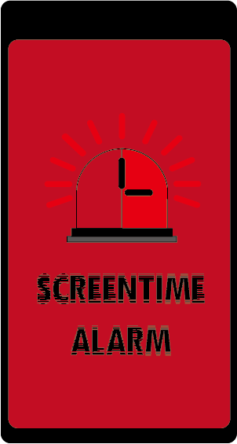

BRANDING
LOGOS
I wanted the logos to look alarming therefore i based the concept around sirens and an alarm clock. I used a series of red for it to be eye-catching but not be too bland with one shade of red.
TYPOGRAPHY
I used the font "Nervous" for the logo font as it its glitchy effect hurts your eyes like when you stare at your screen for too long and things dont seem to focus.